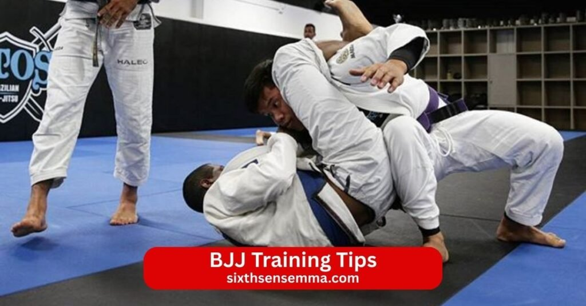
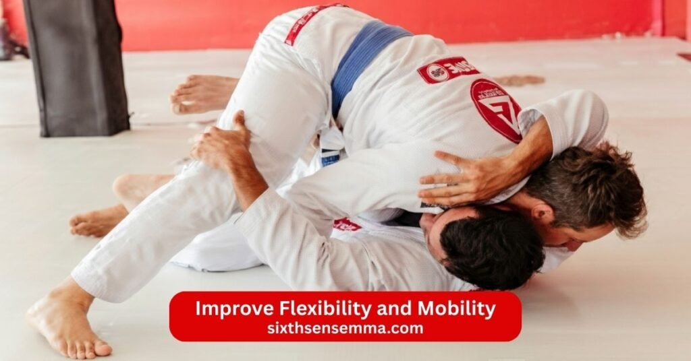

Top 10 BJJ Training Tips to Improve Your Technique Strength and Performance

BJJ training tips guide beginners and experienced practitioners to improve faster and enjoy the Brazilian jiu jitsu journey on the mat. Brazilian jiu jitsu is a martial art that teaches leverage technique and ground fighting so a smaller person can control or submit bigger and stronger opponents. Start with proper warm up mobility drills and a learning attitude then focus on fundamentals like closed guard half guard side control shrimping armbar triangle choke kimura and basic escapes. Train with different training partners drill techniques and strategies leave your ego at the door and build a strong foundation through consistent mat time. Whether you are a white belt in beginner Adult Muay Thai classesor advancing toward blue belt purple belt brown belt or black belt these tips help you grapple better avoid plateaus and make steady progress in your BJJ adventure.
1. Focus on Learning Proper Technique
Focus on learning proper technique from the start especially as a Brazilian jiu jitsu beginner. Drill fundamental moves like shrimping armbar triangle choke kimura and basic escapes slowly before adding speed. Watch how instructors demonstrate and copy the details exactly. Many months of training go into building a strong foundation so take your time with fundamentals instead of rushing to fancy moves.
2. Stay Consistent with Your Training
Stay consistent with your training to see real progress on the bjj journey. Train times per week regularly even if some sessions feel tough. Show up for beginner classes advanced training open mat and everything in between. Consistency turns small improvements into big gains over months of training. Keep a training journal to track what you learned and where you need work. The best advice is simple show up train hard and keep going even when progress feels slow.
3. Improve Your Guard and Defense
Improve your guard and defense early because they keep you safe and let you attack from the bottom. Work on closed guard half guard and other guards to stop opponents from passing. Practice escapes and recovery when someone gets to side control or mount. A solid defense stops bigger and stronger opponents from dominating and gives you chances to sweep or submit. Drill guard retention and defensive moves until they become automatic.
4. Build Strong Grip Strength
Build strong grip strength because grips control the fight in Brazilian jiu jitsu Hold collars sleeves and wrists tightly during rolls to break opponent posture or prevent escapes. Exercises like deadlifts pull ups and farmer carries help but nothing beats live training. Strong grip lets you control posture dominate positions and finish submissions like armbar or triangle choke. Train grip every session and it becomes one of your biggest advantages.
5. Train Your Core for Better Control
Train your core for better control because core strength connects everything in BJJ. A strong core helps you bridge sweep hold mount and escape bad positions. Exercises like planks leg raises and twists build the muscle groups you need. During rolls use your core to create angles generate power and stay stable. Core training improves physical conditioning physical preparation and overall grappling. Work your core regularly and you will notice better control in every position.
6. Practice Drilling and Repetition
Practice drilling and repetition to make techniques second nature. Pick one or two moves like armbar triangle choke or basic guard passes and drill them hundreds of times in every training session. Repetition builds muscle memory so you react faster during live rolls without thinking too much. Drill slowly at first to get the details right then increase speed and resistance with training partners. Consistent drilling turns weak spots into strengths and helps you improve faster over months of training. Many black belts say drilling fundamentals is the real secret to high level BJJ.
7. Learn Position Before Submission
Learn position before submission because controlling your opponent comes first. Focus on getting to dominant position like mount back control or side control then work on finishing. A good position lets you stay safe apply pressure and wait for the right moment to submit. Beginners often chase submissions too early and lose position which gives the opponent a chance to escape or counter. Master positional control first and submissions become much easier and more reliable. This approach saves energy prevents frustration and builds a strong foundation in Brazilian jiu jitsu.

8. Improve Flexibility and Mobility
Improve flexibility and mobility to move better on the mat and avoid injury. Spend time on mobility drills stretches and warm up exercises for hips shoulders back and legs. Good mobility helps you recover guard pass guard play half guard and escape tight positions. Tight hips or shoulders limit your game so stretch regularly and add yoga or specific BJJ mobility drills to your routine. Better flexibility makes techniques smoother and lets you defend against stronger opponents more effectively. Make mobility part of every training session for long term progress.
9. Train with Different Partners
Train with different partners to test your skills against various body types and styles. Rolling with bigger stronger smaller faster or more technical training partners forces you to adapt and learn new ways to apply techniques. One partner might expose weaknesses in your guard while another helps you refine your passing. Different opponents prevent you from getting comfortable with the same people and push you out of your comfort zone. The BJJ community grows stronger when everyone rolls with everyone. Variety in training partners accelerates improvement and prepares you for real self defense situations.
10. Learn from Experienced Coaches
Learn from experienced coaches to avoid bad habits and progress quickly. Good instructors demonstrate proper technique give clear explanations and correct details during class. They help you understand why certain moves work and how to adjust for your body type. Experienced coaches spot patterns in your game offer specific advice and guide you through plateaus. Whether you train at Gracie Barra or another school a qualified coach makes a huge difference. Listen to their feedback ask questions and apply corrections in your next roll. The best way to improve is to train under someone who has walked the path to higher belts.
Common Mistakes Beginners Make in BJJ Training
Beginners in Brazilian jiu jitsu often make simple mistakes that slow progress or lead to frustration on the mat. BJJ rewards technique patience and smart training so avoiding these early errors helps you improve faster and stay safe. Many white belt practitioners push too hard without the right approach which causes bad habits or unnecessary setbacks.
Ignoring Technique and Using Only Strength
One of the most common mistakes beginners make is ignoring technique and using only strength. New practitioners often rely on brute force to muscle through positions escapes or submissions instead of learning proper leverage and positioning. This approach tires you out quickly makes movements sloppy and fails against skilled opponents who use technique efficiently. Beginners might bridge explosively or squeeze submissions with raw power but without correct grips angles and timing the move rarely works. Focusing on strength early creates bad habits that are hard to break later. Take time to drill fundamentals slowly learn how to use body mechanics and let technique do the work. Proper technique saves energy conserves strength and lets smaller grapplers control bigger training partners effectively.
Skipping Warm Up and Mobility Training
Skipping warm up and mobility training is another frequent mistake that leads to problems. Beginners sometimes rush straight into hard rolls or heavy drilling without preparing the body. Without a proper warm up joints stay stiff muscles remain cold and the risk of pulls strains or tweaks rises sharply. Mobility training for hips shoulders back and neck often gets ignored which limits guard play passing and escapes. Tight hips or restricted shoulders make basic movements like shrimping or bridging much harder. Start every bjj class with light cardio dynamic stretches and specific mobility drills to loosen up and increase range of motion. A good warm up prepares the body for physical exertion reduces injury risk and helps you perform techniques correctly from the first roll.
How Professional Coaching Improves BJJ Skills
Professional coaching changes BJJ from trial and error practice into focused skill building. Experienced instructors see details beginners miss and guide you through the learning process safely and efficiently. At a gym like Sixth Sense MMA professional coaching provides structure feedback and direction that accelerate improvement and help you avoid common pitfalls.
Structured Training Programs
Structured training programs make BJJ skills grow steadily and logically. Professional coaches design classes that start with fundamentals for white belt beginners and progress to advanced techniques for higher belts. Sessions build in a clear order from basic grips posture and escapes to guard passing submissions and positional sparring. Programs include warm up drilling partner drills live rolling and specific position work so nothing gets skipped. This organized approach prevents plateaus keeps training balanced and ensures you develop a strong foundation before chasing complex moves. Structured programs help practitioners improve faster by focusing effort on what matters most at each stage of the bjj journey.
Personalized Feedback from Coaches
Personalized feedback from coaches stands out as one of the biggest advantages of professional training. An experienced instructor watches your rolls spots small errors in posture grip placement hip movement or timing and corrects them immediately. They explain why a technique fails or succeeds and adjust advice to fit your body type learning style and current skill level. During class coaches give individual pointers while you drill or roll which helps fix bad habits before they become permanent. Personalized feedback builds confidence because you know exactly what to work on next. This direct guidance shortens the learning curve prevents frustration and helps you reach higher levels much quicker than training alone or without proper instruction.
Why Choose Sixth Sense MMA for BJJ Training Tips Program?
Sixth Sense MMA stands out as the ideal place for Brazilian jiu jitsu training because it combines expert instruction clear progression and a positive atmosphere that supports real growth. The BJJ program fits beginners white belt practitioners moving toward blue belt purple belt or beyond as well as advanced grapplers looking to refine techniques. Every part of the gym focuses on helping you build effective self defense skills physical fitness mental resilience and personal growth in a safe welcoming space.
Certified and Experienced BJJ Instructors
The certified and experienced BJJ instructors at Sixth Sense MMA bring deep knowledge of Brazilian jiu jitsu from years of training teaching and rolling on the mat. They hold proper certifications and have a strong understanding of fundamentals advanced techniques and competition strategies. During classes they demonstrate moves correctly explain the details behind them and correct small errors in posture grip placement or hip movement right away. Beginners get patient step by step guidance while advanced students receive precise feedback on timing strategy and positional dominance. Their experience helps you avoid common mistakes build a strong foundation and progress faster than you would without proper coaching.
Classes for Beginners and Advanced Students
Sixth Sense MMA offers classes tailored for beginners and advanced students so training always matches your current level. Beginner classes cover basics like stance grips shrimping basic escapes closed guard half guard and simple submissions in a slow controlled way. Intermediate sessions add guard passing sweeps transitions and more complex attacks. Advanced classes include live rolling specific position drilling competition preparation and high level techniques like de la riva or advanced submissions. The structured progression builds skills logically without gaps or overload. Small class sizes let instructors give attention to every student so you improve steadily and feel confident at every step of your BJJ journey.
Safe and Supportive Training Environment
Safety and support define the training environment at Sixth Sense MMA. Instructors emphasize proper warm up controlled rolling and technique to keep injury risk low. They monitor intensity during sparring make sure partners match skill levels and stop unsafe situations immediately. The gym fosters a positive welcoming atmosphere where training partners encourage each other celebrate progress and help during tough rolls. Beginners feel comfortable asking questions while advanced practitioners find partners who push them without ego. This supportive community creates strong bonds makes training enjoyable and helps you stay consistent even through plateaus or setbacks.
Modern Training Facilities
Sixth Sense MMA features modern training facilities designed specifically for effective BJJ practice. The mats offer good cushion grip and plenty of space for rolling drilling and partner work without feeling crowded. The room has proper lighting ventilation and a clean layout that keeps everyone comfortable during long sessions. Equipment like gis dummies and other tools stays well maintained and hygienic. The setup supports all aspects of training from warm up mobility drills to live sparring and specific position work. Modern facilities let you focus fully on technique learning and improvement while enjoying a professional clean space that encourages regular attendance.
Contact US
If you are ready to start Brazilian jiu jitsu training learn practical self defense skills improve your physical fitness build mental resilience or just come by to see the gym and talk to the instructors we are here to help you get started.
- 817 S MacArthur Blvd #100 Coppell TX 75019 United States
- (469) 972 7800
- info@sixthsensemma.com
Conclusion
Brazilian jiu jitsu delivers real benefits that strengthen both body and mind over time. On the physical side BJJ builds functional strength full body conditioning cardiovascular endurance flexibility mobility and better balance through constant grappling rolling and resistance on the mat. It supports weight loss fat burning muscle development and overall physical fitness without depending on brute strength. Practitioners learn to use leverage and technique to handle bigger stronger opponents which makes BJJ one of the most effective martial arts for self defense.
Follow Us on Social Media
Stay connected with Sixth Sense MMA through our social media channels. Follow us for class updates, training tips, and a closer look at our self defense community.
FAQ’s
The 80/20 rule in BJJ (Pareto principle applied to training) means roughly 80% of your results come from mastering 20% of the most effective and high percentage techniques and positions. Focus on core fundamentals like basic guard passing closed guard retention mount control back takes side control escapes and common submissions (armbar triangle choke rear naked choke cross collar choke) instead of chasing rare advanced moves. Drilling these high percentage fundamentals repeatedly leads to faster improvement and better performance in live rolling than learning many low percentage techniques.
Mark Zuckerberg is a blue belt in Brazilian jiu jitsu. He was promoted to blue belt in late 2024 by his instructor Guilherme “Gui” Mendes after winning gold medals in his weight class and age group at the IBJJF Master Worlds. He trains regularly at Art of Jiu Jitsu in California.
Get better at BJJ by training consistently (3–5 times per week) focusing on proper technique over strength drilling fundamentals daily rolling with different partners leaving your ego at the door learning position before submission improving guard defense and escapes building grip and core strength tracking progress in a training journal and listening to experienced coaches for personalized feedback. Stay patient drill high percentage moves prioritize recovery and enjoy the process.
Yes BJJ is good for bone density because it involves weight bearing impact and resistance. Grappling creates force through bones and joints during takedowns sweeps bridges and positional battles. This mechanical loading stimulates bone remodeling similar to weight training or running. Regular BJJ training helps maintain or improve bone density especially when combined with proper nutrition (calcium vitamin D) and progressive resistance. Studies on high impact and resistance activities show positive effects on bones.
No public evidence shows Elon Musk training in jiu jitsu or Brazilian jiu jitsu. He has not mentioned practicing BJJ posted about rolling or been seen at any BJJ gyms or events. He focuses on business engineering and other projects rather than martial arts training.
No Jim Carrey is not a black belt in BJJ or any martial art. He has never claimed or shown evidence of training in Brazilian jiu jitsu or earning any rank. Rumors occasionally circulate but no credible source confirms any belt or training history.
Many celebrities train in Brazilian jiu jitsu including Mark Zuckerberg (blue belt) Joe Rogan (black belt) Guy Ritchie (black belt) Tom DeBlass (black belt) Ashton Kutcher (brown belt) Rener Gracie has trained many actors and others like Keanu Reeves (trained briefly) Chris Hemsworth (trained for roles) and Demi Lovato (blue belt) have practiced BJJ at various levels.
Jean Claude Van Damme is not a black belt in Brazilian jiu jitsu. He has no documented rank in BJJ. He trained in various martial arts including karate kickboxing and taekwondo but never earned a BJJ black belt or any recognized rank in Brazilian jiu jitsu.
Helio Gracie is widely regarded as the godfather of BJJ. He adapted Japanese jiu jitsu to create Brazilian jiu jitsu by emphasizing leverage technique and ground fighting to make it effective for smaller people. Helio refined the art with his brothers and sons turning it into the modern sport and self defense system known today.
Several legendary figures hold the 9th degree red belt in Brazilian jiu jitsu (the second highest rank below red and black 10th degree grandmaster). Current 9th degree red belts include Carlos Gracie Jr. Robson Gracie Relson Gracie Reyla Gracie Rorion Gracie Royler Gracie and Rolls Gracie (posthumously recognized). The Gracie family and a few other pioneers received this rank for their lifetime contributions to the art.
Train with us in Coppell
The first class is free. Shorts, a t-shirt and a water bottle. We lend the rest.
Book a free class